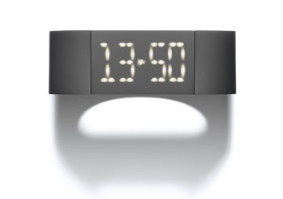
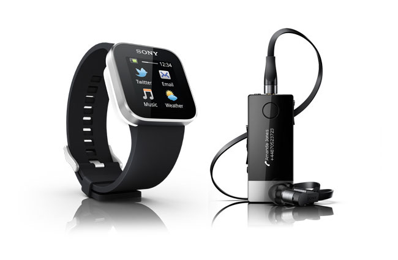

Smarte klokker
Laget avAlexander Arnesen / @ArnesenAlex
- Sony Smartwatch
- Pebble
I'M watch- MetaWatch
- COOKOO
SWAP- GPS-klokker
mutewatch- iPod nano?
3 retninger
Enkeltstående
- GPS klokker
- mutewatch
- iPod nano

tilkoblet
- COOKOO

tilkoblet med SDK
- Sony Smartwatch
- MetaWatch
- Pebble
Funksjoner
- Varsler
- Quick response
- Musikk
- Gått fra telefon/bag
Min første "smarte" klokke

Metawatch strata
Sony smartwatch

Pebble
Framtiden
- Sikkerhet
- iWatch? Google Watch?